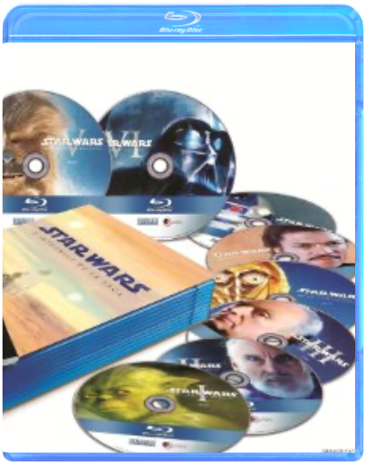
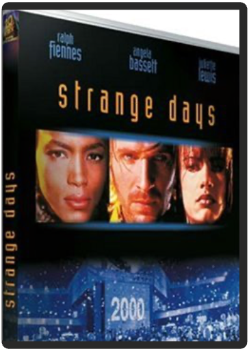

Sonatine  star wars - coffret collector blu-raygeorges lucas La saga inter-galactique la plus populaire du monde va enfin bénéficier d'un son et d'une image HD !  strange dayskathryn bigelow Gros plan sur un il grand ouvert. Enchaînement sur un enclenchement de lecteur CD. Et go ! pour un casse hyper-violent qui combine plan-séquence et caméra subjective : pas de course hallucinants, image bleutée, panique, sirènes de police assourdissantes, poursuite sur les toits, musique survoltée… Ouf ! On reste littéralement scotché par la scène d'ouverture de ce techno-trip de science-fiction qu'est Strange Days. Après les surfers baba-grunge de Point Break, Kathryn Bigelow nous entraîne au bord du gouffre dans le Los Angeles orgiaque et futuriste du 30 décembre 1999 – le film date de 1996. Sur fond de chaos urbain, de gigantesque teuf fin de siècle, de violence policière, de racisme, de folie sexuelle et de télétrip, cette drogue d'un nouveau genre, l'action s'attache aux destins croisés de trois personnages : Lenny Nero, sorte d'ange à la beauté du diable, incarné avec sensualité par Ralph Fiennes (Le Patient anglais) ; Mace, à laquelle Angela Basset prête son physique avantageux ; enfin, Faith, mixte de Courtney Love et de PJ. Harvey, jouée par Juliette Lewis (Tueurs nés). Certes, devant une telle densité de thèmes potentiels, le scénario s'emmêle un peu les pinceaux. N'empêche : quelque part entre Orange mécanique et Blade Runner, ce fantastique techno-thriller – produit par M. Bigelow, James Cameron – fonctionne comme une ligne de coke ou un trip à l'ecstasy : énergique, paranoïaque, euphorique. —Sylvain Lefort  Quick Shipping !!! New And Sealed !!! This Disc WILL NOT play on standard US DVD player. A multi-region PAL/NTSC DVD player is request to view it in USA/Canada. Please Review Description. |  状態 スレ、新品同様になります。 ノークレームノーリターンでおねがいします。 管理番号 10776 「※現品撮影ですのでこちらの商品をお届け致します。」  状態 スレ、新品同様になります。 ノークレームノーリターンでおねがいします。 管理番号 10775 「※現品撮影ですのでこちらの商品をお届け致します。」  The picture in this Blu-ray version is more beautiful than Ghibli DVD movies. Ghibli full COLLECTION Movies directed by Hayao Miyazaki  Blu-ray non zoné compatible avec tous les lecteurs blu-ray |

Julien
Collection Total:
1 888 Items
1 888 Items
Last Updated:
Aug 16, 2021
Aug 16, 2021


 Made with Delicious Library
Made with Delicious Library